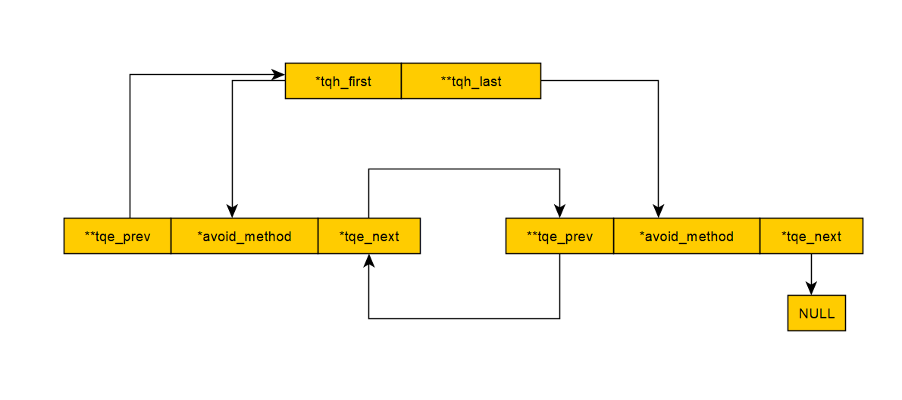

libevent所有的核心工作函数运行都围绕着一个结构体struct event_base
在调用任何libevent核心函数之前，都会先创建一个这样的结构体
创建event_base（base可以理解为基础，根基的意思，所有事物的工作都必须围绕其展开）
struct event_base * event_base_new(void)
{
struct event_base *base = NULL;
struct event_config *cfg = event_config_new();
if (cfg) {
base = event_base_new_with_config(cfg);
event_config_free(cfg);
}
return base;
}
函数event_config_new()
struct event_config *event_config_new(void)
{
struct event_config *cfg = mm_calloc(1, sizeof(*cfg));//内存分配
if (cfg == NULL)
return (NULL);
TAILQ_INIT(&cfg->entries);//初始化enteries
cfg->max_dispatch_interval.tv_sec = -1;
cfg->max_dispatch_callbacks = INT_MAX;
cfg->limit_callbacks_after_prio = 1;//其他成员初始化
return (cfg);
}
结构体struct event_config
struct event_config {
TAILQ_HEAD(event_configq, event_config_entry) entries;
int n_cpus_hint;
struct timeval max_dispatch_interval;
int max_dispatch_callbacks;
int limit_callbacks_after_prio;
enum event_method_feature require_features;
enum event_base_config_flag flags;
};
struct event_config_entry {
TAILQ_ENTRY(event_config_entry) next;
const char *avoid_method;
};
函数event_config_new只是做一些简单的初始化，最后会调用函数event_base_new_with_config去进行关键的初始化并返回event_base结构体。
所以对event_base的初始化，实际上就是对结构体event_config的初始化。
接下来分析此结构体成员：
TAILQ_HEAD(event_configq, event_config_entry) entries和 TAILQ_ENTRY(event_config_entry) next;;
#define TAILQ_HEAD(name, type) \
struct name { \
struct type *tqh_first; /* first element */ \
struct type **tqh_last; /* addr of last next element */ \
}
#define TAILQ_ENTRY(type) \
struct { \
struct type *tqe_next; /* next element */ \
struct type **tqe_prev; /* address of previous next element */ \
}
结果就是：
struct event_configq { \
struct event_config_entry *tqh_first; /* first element */ \
struct event_config_entry **tqh_last; /* addr of last next element */ \
} entries;
结构体event_config_entry展开：
struct event_config_entry {
struct { \
struct event_config_entry *tqe_next; /* next element */ \
struct event_config_entry **tqe_prev; /* address of previous next element */ \
}next;
const char *avoid_method;
}
创建一个队列头，名为entries，首尾指针都是struct event_config_entry类型。多个元素构成的队列如下：

而队列元素的数据成员avoid_method，代表此event_base避免使用过的后端。
这里的后端指的就是IO多路复用的方式，在libevent源码包里面，可以看到不同平台的不同的IO多路复用的实现文件如下：

在这里，avoid_method通过字符串指定不使用的后端，字符串形式则为后端的名字如select，epoll等。由于可以指定多个不使用的后端，故使用链表将不使用的所有后端进行存储。
拒绝使用特定后端的函数：
int
event_config_avoid_method(struct event_config *cfg, const char *method)
{
struct event_config_entry *entry = mm_malloc(sizeof(*entry));//为队列结构体分配内存
if (entry == NULL)
return (-1);
if ((entry->avoid_method = mm_strdup(method)) == NULL) {//为不使用的后端method分配内存并保存到队列结构体
mm_free(entry);
return (-1);
}
TAILQ_INSERT_TAIL(&cfg->entries, entry, next);//将其插入到不使用的后端的队列中
return (0);
}
第二个参数调整CPU个数
不懂...
其他元素会在event_config_new分配内存时进行初始化
require_fratures枚举体指定IO复用应该满足的特征：
可以是多个宏的或运算
enum event_method_feature {
/** Require an event method that allows edge-triggered events with EV_ET. */
EV_FEATURE_ET = 0x01, //允许使用EV_ET触发边缘事件
/** Require an event method where having one event triggered among
* many is [approximately] an O(1) operation. This excludes (for
* example) select and poll, which are approximately O(N) for N
* equal to the total number of possible events. */
EV_FEATURE_O1 = 0x02,//添加、删除、或者确定哪个事件激活这些动作的时间复杂度都为O(1)，select和poll不满足
/** Require an event method that allows file descriptors as well as
* sockets. */
EV_FEATURE_FDS = 0x04, //允许是文描述符
/** Require an event method that allows you to use EV_CLOSED to detect
* connection close without the necessity of reading all the pending data.
*
* Methods that do support EV_CLOSED may not be able to provide support on
* all kernel versions.
**/
EV_FEATURE_EARLY_CLOSE = 0x08//需要允许使用EV_CLOSED检测的事件方法，连接关闭，无需读取所有挂起的数据。
};
函数 event_config_require_features对其进行设置
int
event_config_require_features(struct event_config *cfg,
int features)
{
if (!cfg)
return (-1);
cfg->require_features = features;
return (0);
}
从函数的实现可以看到，如果要设置多个特征，不能调用该函数多次，而应该使用位操作。比如: EV_FEATURE_O1 | EV_FEATURE_FDS作为参数。
并不是对于任意的后端，任意的标志的或操作都有效，如使用select作为后端时，标志EV_FEATURE_ET是不能使用的，此时 event_base_new_with_config函数会返回NULL。
查看后端可使用的标志会在后面介绍。
最后一个变量，设置event_base的一些属性：
EVENT_BASE_FLAG_NOLOCK：不要为event_base分配锁。设置这个选项可以为event_base节省一点加锁和解锁的时间，但是当多个线程访问event_base会变得不安全。
EVENT_BASE_FLAG_IGNORE_ENV：选择多路IO复用函数时，不检测EVENT_*环境变量。使用这个标志要考虑清楚：因为这会使得用户更难调试程序与Libevent之间的交互
EVENT_BASE_FLAG_STARTUP_IOCP：仅用于Windows。这使得Libevent在启动时就启用任何必需的IOCP分发逻辑，而不是按需启用。如果设置了这个宏，那么evconn_listener_new和bufferevent_socket_new函数的内部将使用IOCP
EVENT_BASE_FLAG_NO_CACHE_TIME：在执行event_base_loop的时候没有cache时间。该函数的while循环会经常取系统时间，如果cache时间，那么就取cache的。如果没有的话，就只能通过系统提供的函数来获取系统时间。这将更耗时
EVENT_BASE_FLAG_EPOLL_USE_CHANGELIST：告知Libevent，如果决定使用epoll这个多路IO复用函数，可以安全地使用更快的基于changelist 的多路IO复用函数：epoll-changelist多路IO复用可以在多路IO复用函数调用之间，同样的fd 多次修改其状态的情况下，避免不必要的系统调用。但是如果传递任何使用dup()或者其变体克隆的fd给Libevent，epoll-changelist多路IO复用函数会触发一个内核bug，导致不正确的结果。在不使用epoll这个多路IO复用函数的情况下，这个标志是没有效果的。也可以通过设置EVENT_EPOLL_USE_CHANGELIST 环境变量来打开epoll-changelist选项
函数event_config_set_flag对其进行设置，同样位或运算支持多个标志
int event_config_set_flag(struct event_config *cfg, int flag)
{
if (!cfg)
return -1;
cfg->flags |= flag;
return 0;
}
libevent——event_base实现跨平台的多路IO复用接口。
libevent包括了各平台（Windows，Linux等）的IO多路复用的实现，并可通过配置event_base来指定不使用特定后端，来达到使用某后端的目的。具体过程如下：
先看到结构体event_base（只列出此处重要的部分）
struct event_base {
/** Function pointers and other data to describe this event_base's
* backend. */
const struct eventop *evsel;
/** Pointer to backend-specific data. */
void *evbase;
结构体eventop:
struct eventop {
const char *name;//后端名字
void *(*init)(struct event_base *);
/*函数设置event_base以使用此后端。它应该创建一个包含所需信息的新结构运行后端并返回它。返回的指针将得到由event_init存储到event_base.evbase字段。失败,这个函数应该返回NULL。*/
int (*add)(struct event_base *, evutil_socket_t fd, short old, short events, void *fdinfo);
/*在给定的fd或信号上启用读/写功能。“event”是我们要启用的事件:一个或多个EV_READ，EV_WRITE、EV_SIGNAL和EV_ET。“old”将是那些事件在此fd之前已启用。“fdinfo”将是一个通过evmap与fd关联的结构;它的大小在fdinfo字段里面决定。它将被设置为0的第一次fd时被添加。函数成功时返回0，错误时返回-1。*/
int (*del)(struct event_base *, evutil_socket_t fd, short old, short events, void *fdinfo);
/*与add相反*/
int (*dispatch)(struct event_base *, struct timeval *);
/*函数来实现事件循环的核心。它必须看哪一个添加的事件已经准备好，并将为每个事件调用event_active活动事件(通常通过event_io_active或类似的事件)。它应该成功返回0，错误返回-1。*/
void (*dealloc)(struct event_base *);
/*清理和释放event_base中的数据/
int need_reinit;
/*标志:如果我们需要在fork之后重新初始化event_base，则设置。*/
enum event_method_feature features;
/*这个后端可以支持的event_method_features的位数组*/
size_t fdinfo_len;
/*为每个fd记录额外信息的长度具有一个或多个活动事件。这些信息被记录下来作为每个fd的evmap条目的一部分，并作为参数传递到上面的add和del函数。*/
};
看这个结构体应该可以看出来，这里面有后端的名字，还有多个函数指针，而且是比较大众的函数指针，所以猜测这个结构体，就是后端的一个抽象，并且每个后端应该都会实现这个结构体的各个函数。
而event_base中第一个成员就是指向特定后端的指针。
在libevent中，每个后端都有对应的实现文件，我们以select为例：
...
struct selectop {
int event_fds; /* Highest fd in fd set */
int event_fdsz;
int resize_out_sets;
fd_set *event_readset_in;
fd_set *event_writeset_in;
fd_set *event_readset_out;
fd_set *event_writeset_out;
};
static void *select_init(struct event_base *);
static int select_add(struct event_base *, int, short old, short events, void*);
static int select_del(struct event_base *, int, short old, short events, void*);
static int select_dispatch(struct event_base *, struct timeval *);
static void select_dealloc(struct event_base *);
const struct eventop selectops = {
"select",
select_init,
select_add,
select_del,
select_dispatch,
select_dealloc,
0, /* doesn't need reinit. */
EV_FEATURE_FDS,
0,
};
...
可以看到，select.c文件中实现了结构体eventop,并且可以看到，select支持的特征只有EV_FEATURE_FDS。
也可以查看其他后端文件，每个后端文件都会实现自己的eventop结构体。
现在只要解决event_base如何选择自己的eventop结构体就行了。
很明显，并不是所有系统都支持所有的后端，如Linux，就只支持select，poll，epoll而不支持kqueue，所以，对于不同的操作系统，所支持的后端是不一样的。libevent的event-config.h文件会指定libevent所在的环境，从而指定能使用的后端。
#ifdef EVENT__HAVE_EVENT_PORTS
extern const struct eventop evportops;
#endif
#ifdef EVENT__HAVE_SELECT
extern const struct eventop selectops;
#endif
#ifdef EVENT__HAVE_POLL
extern const struct eventop pollops;
#endif
#ifdef EVENT__HAVE_EPOLL
extern const struct eventop epollops;
#endif
#ifdef EVENT__HAVE_WORKING_KQUEUE
extern const struct eventop kqops;
#endif
#ifdef EVENT__HAVE_DEVPOLL
extern const struct eventop devpollops;
#endif
#ifdef _WIN32
extern const struct eventop win32ops;
#endif
/* Array of backends in order of preference. */
static const struct eventop *eventops[] = {
#ifdef EVENT__HAVE_EVENT_PORTS
&evportops,
#endif
#ifdef EVENT__HAVE_WORKING_KQUEUE
&kqops,
#endif
#ifdef EVENT__HAVE_EPOLL
&epollops,
#endif
#ifdef EVENT__HAVE_DEVPOLL
&devpollops,
#endif
#ifdef EVENT__HAVE_POLL
&pollops,
#endif
#ifdef EVENT__HAVE_SELECT
&selectops,
#endif
#ifdef _WIN32
&win32ops,
#endif
NULL
};
libevent通过宏指定可使用的后端，并将可使用的后端添加到全局数组eventops中，以Linux为例，event-config.h文件只会定义EVENT__HAVE_EPOLL，EVENT__HAVE_POLL和EVENT__HAVE_SELECT宏。
所以最后全局数组eventops中只会有这三个后端。值得注意的是，Linux下IO多路复用效率最高的就是epoll,其次是poll，select，而此处也是按照这个顺序将其添加到数组中，也就是说，如果我们不去指定后端，默认就会使用效率最高的那个。
libevent选取多路复用的函数：
struct event_base *
event_base_new_with_config(const struct event_config *cfg)
{
int i;
struct event_base *base;
int should_check_environment;
#ifndef EVENT__DISABLE_DEBUG_MODE
event_debug_mode_too_late = 1;
#endif
if ((base = mm_calloc(1, sizeof(struct event_base))) == NULL) {//为event_base分配内存
event_warn("%s: calloc", __func__);
return NULL;
}
if (cfg)
base->flags = cfg->flags;//标志设置，可在之前调用函数event_config_set_flag指定
should_check_environment =
!(cfg && (cfg->flags & EVENT_BASE_FLAG_IGNORE_ENV));
{
struct timeval tmp;
int precise_time =
cfg && (cfg->flags & EVENT_BASE_FLAG_PRECISE_TIMER);
int flags;
if (should_check_environment && !precise_time) {
precise_time = evutil_getenv_("EVENT_PRECISE_TIMER") != NULL;
if (precise_time) {
base->flags |= EVENT_BASE_FLAG_PRECISE_TIMER;
}
}
flags = precise_time ? EV_MONOT_PRECISE : 0;
evutil_configure_monotonic_time_(&base->monotonic_timer, flags);
gettime(base, &tmp);
}
min_heap_ctor_(&base->timeheap);
base->sig.ev_signal_pair[0] = -1;
base->sig.ev_signal_pair[1] = -1;
base->th_notify_fd[0] = -1;
base->th_notify_fd[1] = -1;
TAILQ_INIT(&base->active_later_queue);
evmap_io_initmap_(&base->io);
/*void
evmap_io_initmap_(struct event_io_map* ctx)
{
evmap_signal_initmap_(ctx);
}
void
evmap_signal_initmap_(struct event_signal_map *ctx)
{
ctx->nentries = 0;
ctx->entries = NULL;
}*/
evmap_signal_initmap_(&base->sigmap);
event_changelist_init_(&base->changelist);
base->evbase = NULL;
if (cfg) {
memcpy(&base->max_dispatch_time,
&cfg->max_dispatch_interval, sizeof(struct timeval));
base->limit_callbacks_after_prio =
cfg->limit_callbacks_after_prio;
} else {
base->max_dispatch_time.tv_sec = -1;
base->limit_callbacks_after_prio = 1;
}
if (cfg && cfg->max_dispatch_callbacks >= 0) {
base->max_dispatch_callbacks = cfg->max_dispatch_callbacks;
} else {
base->max_dispatch_callbacks = INT_MAX;
}
if (base->max_dispatch_callbacks == INT_MAX &&
base->max_dispatch_time.tv_sec == -1)
base->limit_callbacks_after_prio = INT_MAX;
for (i = 0; eventops[i] && !base->evbase; i++) {//遍历后端数组
if (cfg != NULL) {//如果event_config不为空，
/* determine if this backend should be avoided */
if (event_config_is_avoided_method(cfg,
eventops[i]->name))
continue;//如果设置不使用此后端就跳过（该函数会遍历不使用后端的队列）
if ((eventops[i]->features & cfg->require_features)
!= cfg->require_features)
continue;//如果设置的后端的标志不与此后端标志匹配，则跳过
}
/* also obey the environment variables */
if (should_check_environment &&
event_is_method_disabled(eventops[i]->name))
continue;
base->evsel = eventops[i];//最后找到一个
base->evbase = base->evsel->init(base);//调用对应的后端初始化函数
}
if (base->evbase == NULL) {
event_warnx("%s: no event mechanism available",
__func__);
base->evsel = NULL;
event_base_free(base);
return NULL;
}
if (evutil_getenv_("EVENT_SHOW_METHOD"))
event_msgx("libevent using: %s", base->evsel->name);
/* allocate a single active event queue */
if (event_base_priority_init(base, 1) < 0) {
event_base_free(base);
return NULL;
}
/* prepare for threading */
#if !defined(EVENT__DISABLE_THREAD_SUPPORT) && !defined(EVENT__DISABLE_DEBUG_MODE)
event_debug_created_threadable_ctx_ = 1;
#endif
#ifndef EVENT__DISABLE_THREAD_SUPPORT
if (EVTHREAD_LOCKING_ENABLED() &&
(!cfg || !(cfg->flags & EVENT_BASE_FLAG_NOLOCK))) {
int r;
EVTHREAD_ALLOC_LOCK(base->th_base_lock, 0);
EVTHREAD_ALLOC_COND(base->current_event_cond);
r = evthread_make_base_notifiable(base);
if (r<0) {
event_warnx("%s: Unable to make base notifiable.", __func__);
event_base_free(base);
return NULL;
}
}
#endif
#ifdef _WIN32
if (cfg && (cfg->flags & EVENT_BASE_FLAG_STARTUP_IOCP))
event_base_start_iocp_(base, cfg->n_cpus_hint);
#endif
return (base);
}
后端存储数据的结构体：
在本文最前面列出的event_base结构体中，除了evsel变量外，还有一个evbase变量。这也是一个很重要的变量，而且也是用于跨平台的。
像select、poll、epoll之类多路IO复用函数在调用时要传入一些数据，比如监听的文件描述符fd，监听的事件有哪些。在Libevent中，这些数据都不是保存在event_base这个结构体中的，而是存放在evbase这个指针指向的一个结构体中。
在每个后端文件中，除了结构体eventop的定义，还会有一个包含自己后端名的结构体：
struct pollop {
int event_count; /* Highest number alloc */
int nfds; /* Highest number used */
int realloc_copy; /* True iff we must realloc
* event_set_copy */
struct pollfd *event_set;
struct pollfd *event_set_copy;
};
struct selectop {
int event_fds; /* Highest fd in fd set */
int event_fdsz;
int resize_out_sets;
fd_set *event_readset_in;
fd_set *event_writeset_in;
fd_set *event_readset_out;
fd_set *event_writeset_out;
};
struct epollop {
struct epoll_event *events;
int nevents;
int epfd;
#ifdef USING_TIMERFD
int timerfd;
#endif
};
在函数event_base_new_with_config初始化的最后，回调用对应后端的init函数：
如select：
static void *
select_init(struct event_base *base)
{
struct selectop *sop;
if (!(sop = mm_calloc(1, sizeof(struct selectop))))
return (NULL);
if (select_resize(sop, SELECT_ALLOC_SIZE(32 + 1))) {
select_free_selectop(sop);
return (NULL);
}
evsig_init_(base);
evutil_weakrand_seed_(&base->weakrand_seed, 0);
return (sop);
}
函数最后返回selectop结构给event_base的成员evbase。